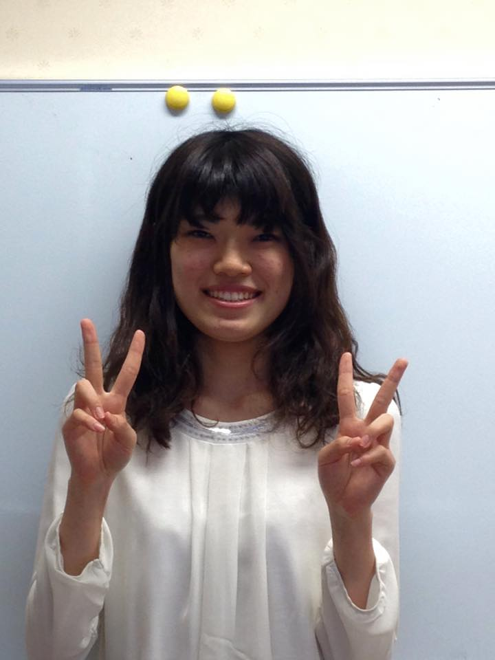
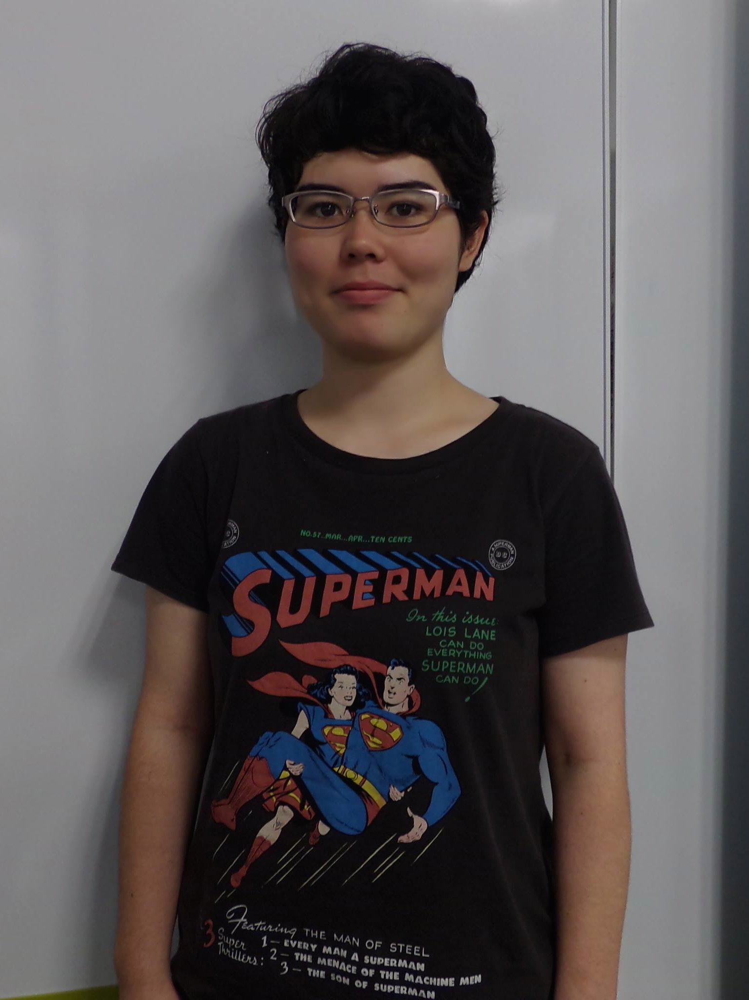
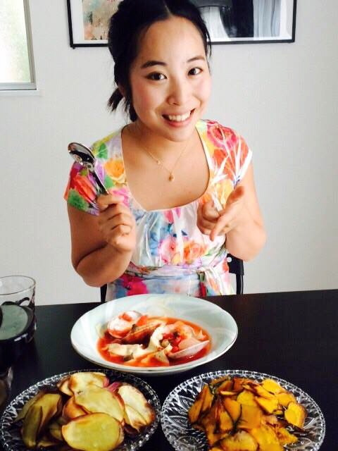
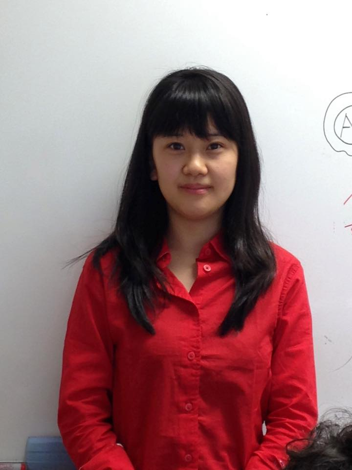
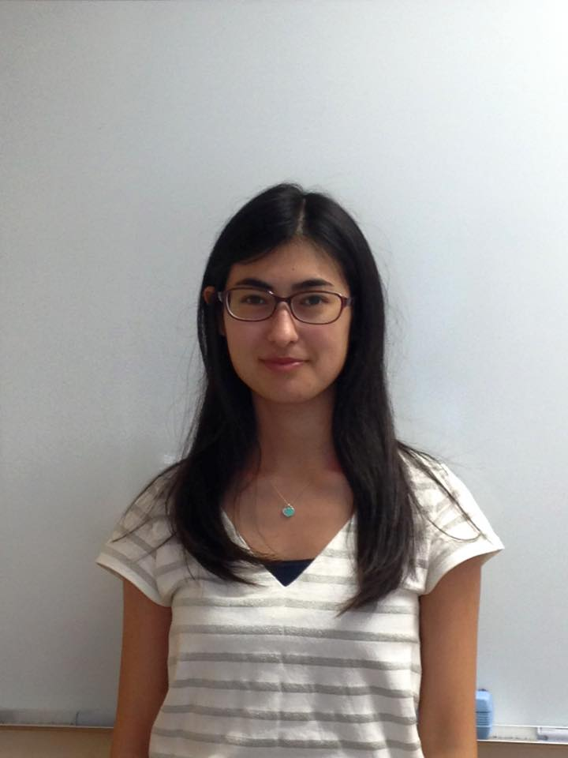
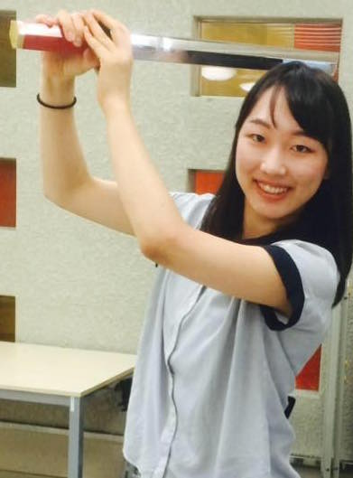
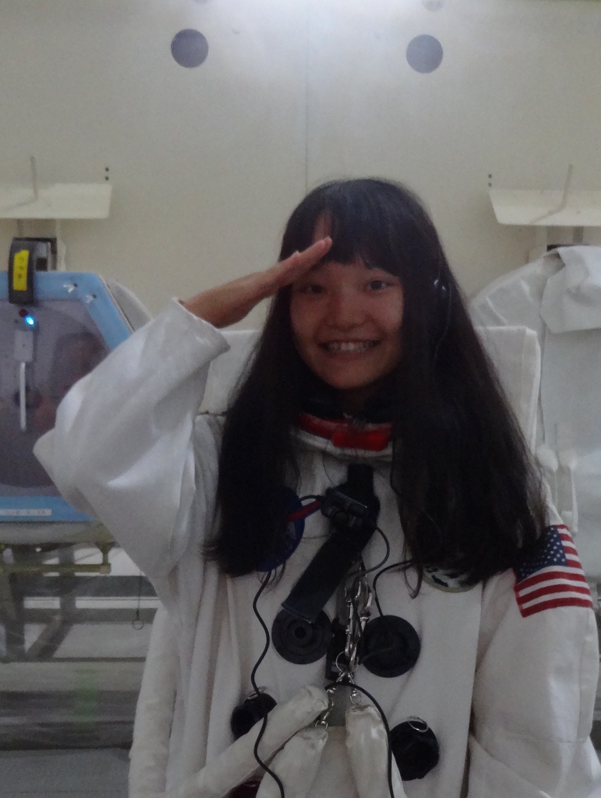
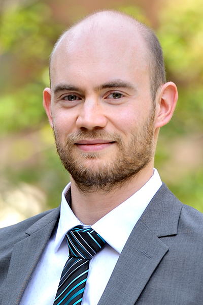

ABOUT US
OUR TEAM
Our team was inaugurated last April, gathering students from various backgrounds, such as biology, chemistry and physics. None of us were familiar with biomolecular design, and we’ve launched this project from scratch. The idea of making an optical filter from DNA origami is the concentration of each member’s specialty, and our team successfully achieved to suggest a unique idea.
TEAM MEMBERS
 |
 |
| Akiko Iida Biology |
Arisa Nakjima Biology |
|  |  |
| Gina Miku Oba Biology |
Haruhi Kaneko Material Science |
|  |  |
| Kana Fujimoto Biology |
Kaori Nara Biology |
|  |  |
| Mai Itagaki Biology |
Rina Onda Physics |
SUPERVISOR
|  |
| Dr. Nathanael Aubert-Kato |
SPONSORS
・Institute for grobal leadership (Ochanomizu university)・Leading graduate school promotion center (Ochanomizu university)